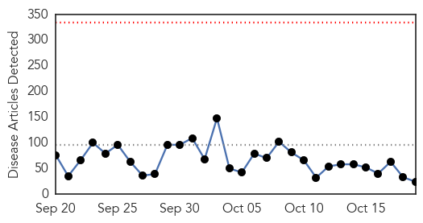
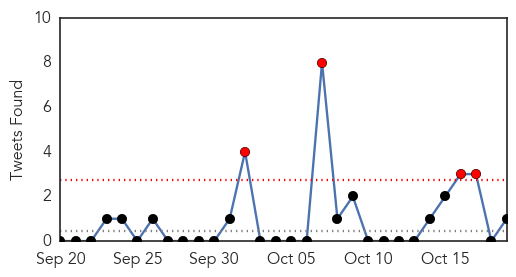
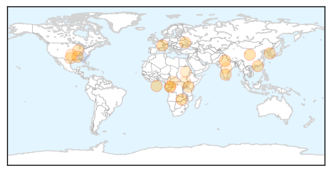
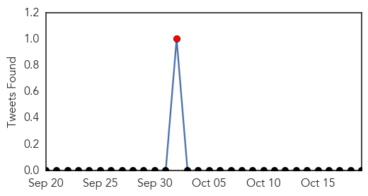

Unknown
30-Day Web Trend
0 alerts, 0 warnings

30-Day Twitter Trend
4 alerts, 0 warnings

Article Locations
Article Confidences
Top Articles:
- 0.982
- The Post
- 0.977
- Northamptonshire healthcare bosses urge residents with existing medical conditions to get free flu jab
- 0.967
- State officials identify first flu case this season
- 0.917
- Chicago Tribune
- 0.917
- Chicago Tribune
- 0.917
- Chicago Tribune
- 0.917
- Chicago Tribune
- 0.917
- Chicago Tribune
- 0.910
- The world windows to Thailand
- 0.878
- Deadly disease: Congo fever claims another life
- 0.866
- Fire crews battle blaze at British power station
- 0.849
- Flu shots recommended annually for everyone over 6 months
- 0.730
- Kenya : Study: Staffing of medics is skewed
- 0.702
- Anti-smoking group pushes for graphic posters in stores
- 0.697
- Whole exome sequencing closer to becoming 'new family history'
- 0.681
- Central African Republic: UN officials deplore militia's targeting of hospitals, patients
- 0.674
- City chooses not to fluoridate its water supply
- 0.621
- Two more cases of Congo virus surface, raising the number to six
- 0.592
- SCDHB changes falls policy after patient deaths
- 0.563
- UN confirms relocation of displaced Nuers to new site in Bor
- 0.563
- UN confirms relocation of displaced Nuers to new site in Bor
- 0.553
- 1,850 Delhi Metro commuters provided emergency medical aid
- 0.517
- 2 Patna doctors serve flood-hit in Kashmir
- 0.510
- Telangana doctors for cyclone-hit areas
Top Tweets:
- 0.579
- RT: .@itsmepanda1 Flu activity often begins increasing in Oct, peaking between Dec. & Feb. Getting a flu vax before flu activity b…
- 0.525
- la paz que se encuentra en él, nunca la habia experimentado en nadie
- 0.501
- Reconstituted NSABB meets this week MTThe pause in risky flu, MERS, and SARS studies: What's next. http://t.co/1IiiQcxzP1
Yellow Fever
30-Day Web Trend
0 alerts, 0 warnings
30-Day Twitter Trend
1 alerts, 0 warnings

Article Locations

Article Confidences

Top Articles:
Top Tweets:
-
No tweets found for Oct 19, 2014